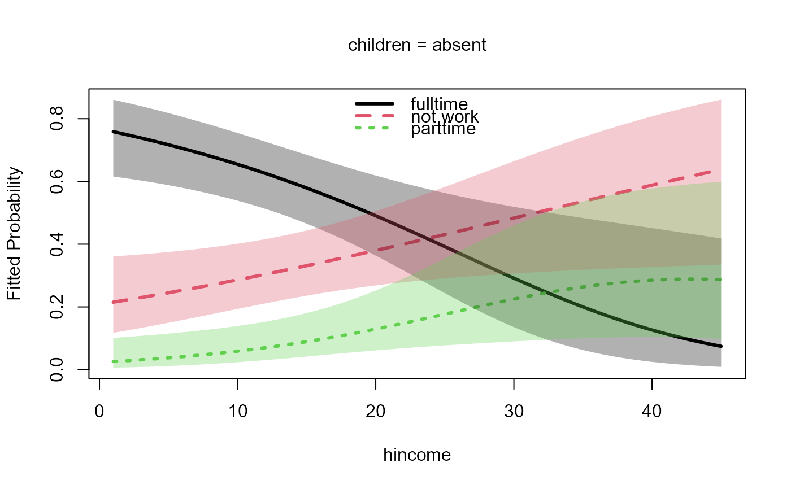

A plot method for "nestedLogit" objects produced by the
nestedLogit function. Fitted probabilities under the model are plotted
for each level of the polytomous response variable, with one of the explanatory variables
on the horizontal axis and other explanatory variables fixed to particular values.
By default, a 95% pointwise confidence envelope is added to the plot.
Usage
# S3 method for class 'nestedLogit'
plot(
x,
x.var,
others,
n.x.values = 100L,
xlab = x.var,
ylab = "Fitted Probability",
main,
cex.main = 1,
digits.main = getOption("digits") - 2L,
font.main = 1L,
pch = 1L:length(response.levels),
lwd = 3,
lty = 1L:length(response.levels),
col = palette()[1L:length(response.levels)],
legend = TRUE,
legend.inset = 0.01,
legend.location = "topleft",
legend.bty = "n",
conf.level = 0.95,
conf.alpha = 0.3,
...
)Arguments
- x
an object of
"nestedLogit"produced bynestedLogit.- x.var
quoted name of the variable to appear on the x-axis; if omitted, the first predictor in the model is used.
- others
a named list of values for the other variables in the model, that is, other than
x.var; if any other predictor is omitted, it is set to an arbitrary value—the mean for a numeric predictor or the first level or value of a factor, character, or logical predictor; only one value may be specified for each variable inothers.- n.x.values
the number of evenly spaced values of
x.varat which to evaluate fitted probabilities to be plotted (default100).- xlab
label for the x-axis (defaults to the value of
x.var).- ylab
label for the y-axis (defaults to
"Fitted Probability").- main
main title for the graph (if missing, constructed from the variables and values in
others).- cex.main
size of main title (see
par).- digits.main
number of digits to retain when rounding values for the main title.
- font.main
font for main title (see
par).- pch
plotting characters (see
par).- lwd
line width (see
par).- lty
line types (see
par).- col
line colors (see
par).- legend
if
TRUE(the default), add a legend for the response levels to the graph.- legend.inset
default
0.01(seelegend).- legend.location
position of the legend (default
"topleft", seelegend).- legend.bty
the type of box to be drawn around the legend. The allowed values are "o" (the default) and "n".
- conf.level
the level for pointwise confidence envelopes around the predicted response probabilities; the default is
.0.95. IfNULL, the confidence envelopes are suppressed.- conf.alpha
the opacity of the confidence envelopes; the default is
0.3.- ...
arguments to be passed to
matplot.
Author
John Fox jfox@mcmaster.ca
Examples
data("Womenlf", package = "carData")
m <- nestedLogit(partic ~ hincome + children,
logits(work=dichotomy("not.work", c("parttime", "fulltime")),
full=dichotomy("parttime", "fulltime")),
data=Womenlf)
plot(m, legend.location="top")
#> Note: hincome will be used for the horizontal axis
#> Note: missing predictor children set to its first level, 'absent'

op <- par(mfcol=c(1, 2), mar=c(4, 4, 3, 1) + 0.1)
plot(m, "hincome", list(children="absent"),
xlab="Husband's Income", legend=FALSE)
plot(m, "hincome", list(children="present"),
xlab="Husband's Income")
 par(op)
par(op)